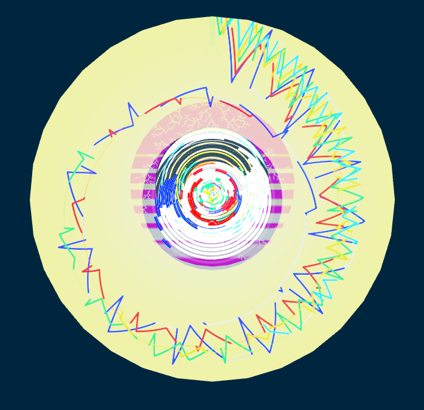

Talea Visualization

cylinder front
Cylinder front: representation of part 1 as a contrast to part 2
Chronological direction: clockwise
Bright yellow background color: represents a loud texture and the single fundamental C and its partials, which is the harmonic foundation for part 1.
Five colored strands: representing the five voices of the polyphonic structure. blue=voice 1, red=voice 2 [etc]
“Range filter”. The development of the melodic ranges of each voice are depicted in the movement of the lines, with pitch height ascending from the center towards the periphery.
“Microtonal filter” [to be created]
Rank weeds. Weed-like designs in the surface structure (following voice chronology????)